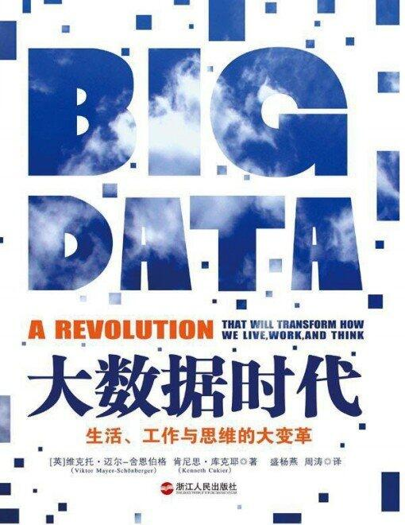

《大数据时代》读书分享
大数据时代，我从百度查到的官方解释是指利用相关算法对海量数据的处理与分析、存储，从海量的数据中发现价值，服务于生活与生产。全球知名咨询公司麦肯锡是最早提出“大数据时代已到来”的这个观点的。麦肯锡称：“数据，已经深入到当今各行各业的职能领域，是重要的生产要素。人们不断对海量数据的挖掘和运用，意味着生产率增长和消费者盈余会成为新一波的浪潮。”大数据对各行各业例如娱乐、教育、电子等领域都会产生影响。人们对其的关注度也逐年呈直线上涨。作为网络与新媒体专业的学生，我也应该了解并抓住这新一波的浪潮，于是在名著导读老师的推荐下和自身对大数据时代的好奇下，我花了半天时间读了《大数据时代》这本书。这本书在我看来可以分为三部分，即大数据引起的思维变革，商业变革，管理变革。在思维变革中，主要会发生以下三个变革，第一：不要样本，而要整体，即样本等于整体。第二：不要准确性，而要效率。第三：不要因果关系，而是要相关关系。同时，《大数据时代》认为大数据的核心就是预测。新服务和新发明的源泉就是大数据，而更多的改变即将登上属于它们的舞台。
2023-4-23
